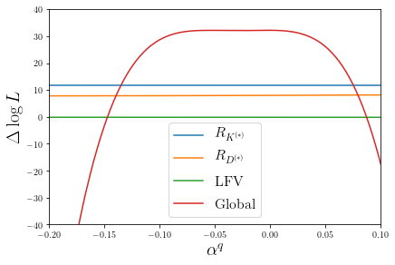
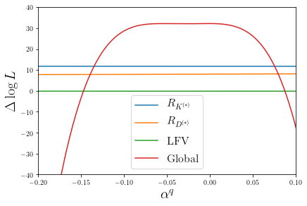

import SMEFT19
import numpy as np
import flavio
flavio.__version__ #we're using the old version, flavio 1.5
'2.3.1'
Scenario I¶
Fit only to C, beta_l and beta_q
def fit(x):
return -SMEFT19.likelihood_global(x, SMEFT19.scenarios.rotBI)
bf, v, d, L = SMEFT19.ellipse.minimum(fit, [-0.117, 0, 0.751])
Minimizing...
Pull: 5.732129288814944 sigma
bf
array([-1.25709823e-01, -5.36322759e-14, 1.05354660e+00])
-2*L
40.14691638642315
SMEFT19.ellipse.save(bf, v, d, L, 'ellipse_scI.yaml', name='Includes 2021 Moriond data', fit='rotBI')
dchi = flavio.statistics.functions.delta_chi2(1,3)
dchi
3.5267403802617303
d_ell = SMEFT19.ellipse.load('ellipse_scI.yaml')
v = d_ell['v']
d = d_ell['d']
H = v @ d @ v.T
bf = d_ell['bf']
L = d_ell['L']
fit(np.array(bf) - np.array([0.05,0,0]))-L #Error for C = 0.05
3.735004126193097
fit(np.array(bf) - np.array([0,0.019,0]))-L #Error for bl = 0.019
3.6428097330123137
fit(np.array(bf) + np.array([0,0,1.7]))-L #Error for bq = +1.7 (asym)
3.4637593513608493
fit(np.array(bf) - np.array([0,0,0.73]))-L #Error for bq = -0.72 (asym)
3.481865400721574
Scenario II¶
Fit to all parameters
def fit(x):
return -SMEFT19.likelihood_global(x, SMEFT19.scenarios.rotBII)
bf2, v, d, L = SMEFT19.ellipse.minimum(fit, [-0.12, 0.07, 0, -0.076, 0.803])
Minimizing...
Pull: 7.071672324032612 sigma
bf2
array([-1.25752918e-01, 7.55406063e-02, 4.05430015e-05, -5.57208373e-02,
7.49043756e-01])
-2*L
64.34714570679681
SMEFT19.ellipse.save(bf2, v, d, L, 'ellipse_scII_a.yaml', name='Includes 2021 Moriond data', fit='rotBII')
dchi = flavio.statistics.functions.delta_chi2(1,5)
dchi
5.887595445915204
d_ell = SMEFT19.ellipse.load('ellipse_scII_a.yaml')
v = d_ell['v']
d = d_ell['d']
H = v @ d @ v.T
bf = d_ell['bf']
L = d_ell['L']
fit(np.array(bf2) - np.array([0.05,0,0,0,0]))-L #Error for C = 0.05
6.152515118775341
fit(np.array(bf2) + np.array([0,0.024,0,0,0]))-L #Error for al = 0.024
5.725242212942433
fit(np.array(bf2) + np.array([0,0,0.019,0,0]))-L #Error for bl = 0.019
5.999778759098582
fit(np.array(bf2) + np.array([0,0,0,0.11,0]))-L #Error for aq = +0.11 (asym)
3.8937656367619624
fit(np.array(bf2) - np.array([0,0,0,0.048,0]))-L #Error for aq = -0.048 (asym)
4.726994849180031
fit(np.array(bf2) + np.array([0,0,0,0,1.3]))-L #Error for bq = +1.4 (asymm)
5.5334446926287555
fit(np.array(bf2) - np.array([0,0,0,0,0.47]))-L #Error for bq = -0.47 (asym)
5.069909766040642
flavio.statistics.functions.pull((64.34714570679681-40.14691638642315)/2,2)
3.0410270049386643
Let’s find another local minimum
bf2b, v, d, L = SMEFT19.ellipse.minimum(fit, [-0.124, 0.0736, 0, 0.0175, 0.667])
Minimizing...
Pull: 7.086556580520946 sigma
bf2b
array([-1.29226796e-01, 7.24475177e-02, -8.01886984e-06, -1.53468401e-03,
7.48352343e-01])
d_ell = SMEFT19.ellipse.load('ellipse_scII_a.yaml')
v1 = d_ell['v']
d1 = d_ell['d']
bf1 = d_ell['bf']
L1 = d_ell['L']
def fit2(x):
return -SMEFT19.likelihood_global([bf1[0], bf1[1], bf1[2], x[0], x[1]], SMEFT19.scenarios.rotBII)
bf2, v2, d2, L2 = SMEFT19.ellipse.minimum(fit2, [0.0175, 0.667])
Minimizing...
Pull: 7.667474971186631 sigma
bf
array([-1.29226796e-01, 7.24475177e-02, -8.01886984e-06, -1.53468401e-03,
7.48352343e-01])
bf2
array([-0.00152962, 0.74830873])
SMEFT19.comparepulls.compare(SMEFT19.scenarios.rotBII, '../../ellipses/rotBII.yaml', '../../TeX/pullsBII')
gl = SMEFT19.SMEFTglob.gl.parameter_point({}, scale=1000)
obstable = gl.obstable()
obstable.index('a_mu')
---------------------------------------------------------------------------
TypeError Traceback (most recent call last)
<ipython-input-30-ff05edab7288> in <module>
----> 1 obstable.index('a_mu')
TypeError: 'Index' object is not callable
o = tuple(obstable.index[1])
print(obstable.loc[[o], 'pull exp.'])
(<dBR/dq2>(Bs->phimumu), 2.5, 4.0) 3.99852
Name: pull exp., dtype: object
import SMEFT19.plots
SMEFT19.plots.compare_plot(SMEFT19.scenarios.rotBII, 'ellipse_scII_a.yaml', 'pulls_scII', 1.5)
import matplotlib.pyplot as plt
import pandas as pd
minpars = [-0.4, -0.15, -0.02, -0.2, 0]
maxpars = [0, 0.15, 0.02, 0.1, 2]
labels = [r'$C$', r'$\alpha^\ell$', r'$\beta^\ell$', r'$\alpha^q$', r'$\beta^q$' ]
names = ['C', 'al', 'bl', 'aq', 'bq']
d_ell = SMEFT19.ellipse.load('ellipse_scII_a.yaml')
bf = d_ell['bf']
def evoplot(i):
logL = []
for p in np.linspace(minpars[i], maxpars[i], 200):
newpoint = bf.copy()
newpoint[i] = p
logL.append(SMEFT19.likelihood_fits(newpoint, SMEFT19.scenarios.rotBII))
return logL
from multiprocessing import Pool
with Pool(3) as pool:
evos = pool.map(evoplot, range(5))
df_evo = [0]*5
for i in range(5):
df_evo[i] = pd.DataFrame(evos[i])
df_evo[0].describe()
| fast_likelihood_quarks.yaml | fast_likelihood_leptons.yaml | likelihood_ewpt.yaml | likelihood_lept.yaml | likelihood_rd_rds.yaml | likelihood_lfu_fccc.yaml | likelihood_lfu_fcnc.yaml | likelihood_bcpv.yaml | likelihood_bqnunu.yaml | likelihood_lfv.yaml | likelihood_zlfv.yaml | custom_custom | global | |
|---|---|---|---|---|---|---|---|---|---|---|---|---|---|
| count | 200.000000 | 200.000000 | 200.000000 | 2.000000e+02 | 200.000000 | 200.000000 | 200.000000 | 200.000000 | 200.000000 | 200.000000 | 200.000000 | 200.0 | 200.000000 |
| mean | -7.077309 | -1.239546 | -0.222396 | -1.842911e-06 | -15.080597 | -0.071516 | -2.165850 | 0.002860 | 0.412180 | -3.331159 | -0.000012 | 0.0 | -28.773346 |
| std | 30.256069 | 0.778096 | 0.149122 | 1.072064e-06 | 27.327484 | 0.048545 | 14.606079 | 0.002608 | 0.227224 | 4.419985 | 0.000011 | 0.0 | 76.674222 |
| min | -107.500024 | -2.671099 | -0.510132 | -3.685966e-06 | -86.792154 | -0.167049 | -38.564251 | 0.000000 | -0.161155 | -16.353180 | -0.000036 | 0.0 | -252.710369 |
| 25% | -12.063197 | -1.894743 | -0.345672 | -2.764394e-06 | -31.192780 | -0.111135 | -11.374836 | 0.000522 | 0.236955 | -5.244651 | -0.000020 | 0.0 | -61.687594 |
| 50% | 6.233481 | -1.190820 | -0.205814 | -1.842875e-06 | -0.739839 | -0.065430 | 3.750870 | 0.002081 | 0.469367 | -1.069974 | -0.000009 | 0.0 | 8.646811 |
| 75% | 12.354424 | -0.559262 | -0.090582 | -9.214107e-07 | 6.213465 | -0.028755 | 9.703149 | 0.004813 | 0.619326 | -0.077775 | -0.000002 | 0.0 | 26.232778 |
| max | 14.692647 | 0.000000 | 0.000000 | 0.000000e+00 | 8.443606 | 0.000000 | 11.763636 | 0.008714 | 0.671101 | 0.000000 | 0.000000 | 0.0 | 32.171717 |
fitcodes = {'RK':'likelihood_lfu_fcnc.yaml', 'RD':'likelihood_rd_rds.yaml', 'LFV':'likelihood_lfv.yaml', 'global':'global'}
fitlabels = {'RK':r'$R_{K^{(*)}}$', 'RD':r'$R_{D^{(*)}}$', 'LFV':'LFV', 'global':'Global'}
for i in range(5):
fig = plt.figure()
for p in fitcodes.keys():
plt.plot(np.linspace(minpars[i], maxpars[i], 200), df_evo[i][fitcodes[p]], lw=1.5, label=fitlabels[p] )
plt.ylim([-40,40])
plt.xlim([minpars[i], maxpars[i]])
plt.legend(fontsize=16)
plt.xlabel(labels[i], fontsize=20)
plt.ylabel(r'$\Delta \log L$', fontsize=20)
plt.tight_layout(pad=0.5)
fig.savefig('evoplot_' + names[i] + '.pdf')
#fig.savefig('evoplot_' + names[i] + '.pgf')
 

plt.rcParams.update({'text.usetex':True})